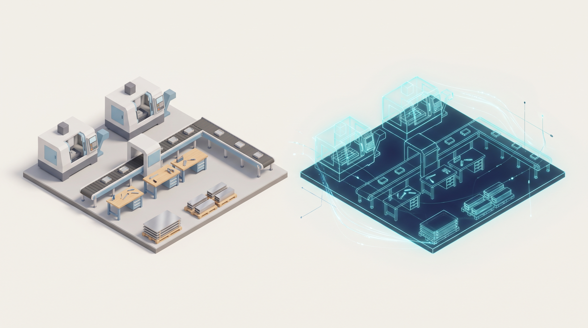

A working software copy of your operation that you can run experiments on.
Describe your factory floor in a spreadsheet and a config file. Get back honest answers about dates, bottlenecks, staffing, and inventory — each with a confidence range, not a guess. No custom code per plant.

The real floor, and the twin you experiment on instead of it.
flowchart TD cfg["model.yaml + plan"] --> model["twinflow.model
compile"] model --> run["twinflow.plan
run"] --> kpi["KPIs + confidence bands"] kpi --> surface["twinflow.modules
scoring surface"] surface --- obj["objectives"] & cost["costs"] & opt["optimizers"] & ml["models"] & cal["calibration"] surface --> adapt["twinflow.adapters
ERP · demand · forecast · dispatch · RL · reconcile"] adapt --> api["REST API"] --> web["React front end"]
Mental model, vocabulary, uncertainty, reproducibility.
The complete model.yaml — every section and field.
Plan, event log, inventory, and the KPI/JSON artifacts.
Stocks, reorder points, lead time, multi-echelon, inventory KPIs.
Dispatch rules, order release, disruptions.
Every term, defined.
End to end in five minutes.
Replications, the report, and every KPI explained.
Sweeps, objectives, costs, optimizers, ML, inventory optimization.
Variation, calibration against real history, sensitivity, guardrails.
Every twinflow command and flag.
Every tab and what you do in it.
Problems, causes, fixes.
Objectives, costs, optimizers, models — and how to add your own.
ERP/MES connectors, demand, forecasting, dispatch, RL, plan-vs-actual.
Endpoints and job polling.
The five-layer design, for developers.